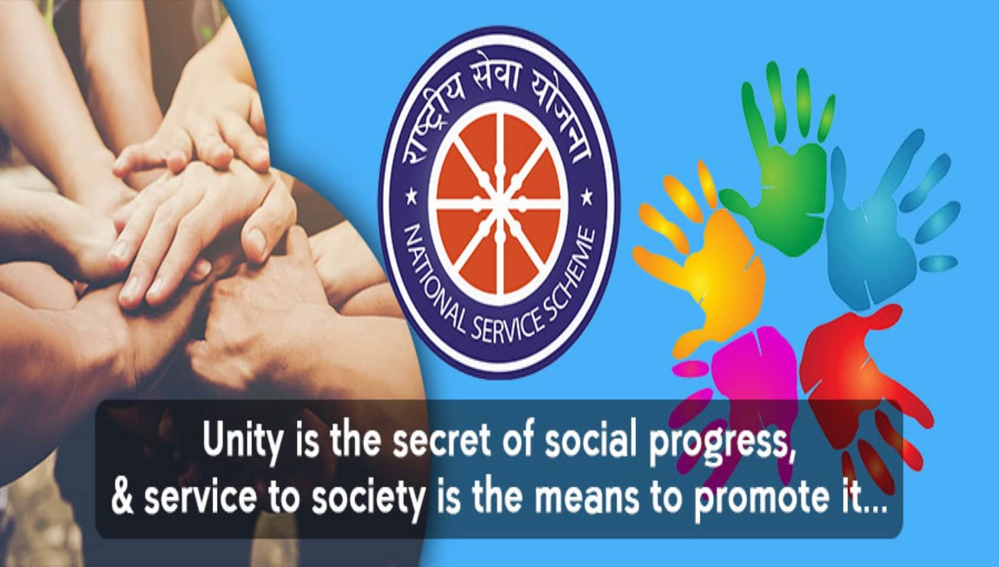

Our Work
What We Do?
From blood drives to village camps — we act wherever society needs us most.

Blood Donation
Organising regular blood donation camps, collecting 500+ units annually to save lives in emergencies.

Village Development
Conducting rural camps focused on sanitation, education, health awareness and sustainable practices.

NSS Annual Camp
Week-long residential camps in adopted villages, delivering hands-on social service and leadership.

Awareness Campaigns
Spreading awareness on hygiene, women empowerment, digital literacy and environmental conservation.